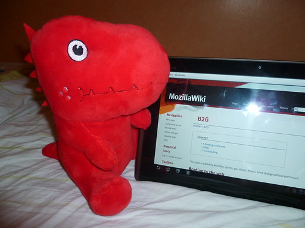

3 août 2011
OSM, B2G, NGale, OMG
Ça y est j'ai décidé de contribuer pour de bon à OpenStreetMap, la cartographie libre comparable au modèle de Wikipédia où chacun peut éditer sa ville :)
Pour commencer, je me suis un peu familiarisé avec OSMtracker ainsi que l'éditeur Potlach (Flash beurk), pour finalement me mettre à JOSM (bien plus complet et efficace). J'ai complété les rues de mon quartier, quelques points d'intérêt, des noms de rue mais j'ai aussi rapporté des bugs de l'interface web notamment la page personnelle qui affiche une mini-carte avec les contributeurs près de chez vous ainsi que le journal personnel. Je suis par ailleurs assez impressionné par la rapidité des corrections des bugs :)
Pour continuer, Mozilla a récemment annoncé le projet B2G : Boot to Gecko. Il vise à développer un système d'exploitation mobile pour téléphones et tablettes reposant sur les technologies ouvertes du web à savoir HTML/CSS/JavaScript. Le projet donne lieu à l'ouverture d'un tas de bugs intéressants pour prendre en charge de nouvelles APIs destinées à la téléphonie, les SMS, la synthèse vocale, les manettes de jeux... Ce futur «Mozilla OS» semble prometteur, de plus il repose sur des fichiers système Android assurant une compatibilité sur la plupart des appareils faisant tourner le système mobile de Google. Quel impact pour les utilisateurs ? Un système entièrement libre (cf Honeycomb), respectueux des standards mais aussi des utilisateurs. (Option pour ne pas être pisté, données encryptées côté client par exemple). Pour les développeurs, pas de nouveau langage à apprendre, les applications seront développées avec les technologies du web. N'importe quel développeur web sera à même de créer et proposer sa propre application.

Si Mozilla a choisi cette voie c'est aussi pour se faire sa place dans le monde du mobile où la concurrence est rude et la notion d'ouverture pas toujours présente. Prenons le cas d'Apple : impossible de proposer de navigateur web alternatif pour iOS. Mozilla a donc développé Firefox Home, permettant juste la synchronisation des onglets ouverts ainsi que des mots de passe. Dans le cas d'Android c'est différent, Firefox Mobile est disponible, cependant ce n'est pas le navigateur par défaut et la plus part ne se contente que du navigateur de base. De plus cette version de Firefox n'est pas «native», c'est-à-dire non développée en Java. Mozilla a fait de gros progrès du coté des performances cependant et l'application fonctionne très bien sur des appareils comme la EEE Pad Transformer (le test arrive bientôt !). Pour finir Windows Mobile 7 ne dispose pas d'un SDK natif et ne propose que le langage Silverlight, donc pas de Panda roux chez «Mammon» même si la donne risque de changer étant donné les dernières annonces de Microsoft quant à arrêter Silverlight au profit de HTML5. J'oublie MeeGo, webOS et autre OpenMoko qui ne sont pas vraiment encore dans la course mais ça n'engage que moi. Je vous invite aussi à lire le billet de Clochix sur Boot to Gecko pour plus d'informations. Quelques nouvelles aussi pour Nightingale : j'ai discuté avec Stevo (ancien développeur Songbird) à propos du projet, rien de neuf si ce n'est que le thème est l'élément bloquant la sortie. Pour finir, petite découverte par un utilisateur Songbird : Nectarine Demoscene Radio. C'est un flux radio avec différentes «démos» audio, du bon son 8-Bit mais pas que :) J'ai ajouté le flux à l'extension BirdTune au passage.
Commentaires 5